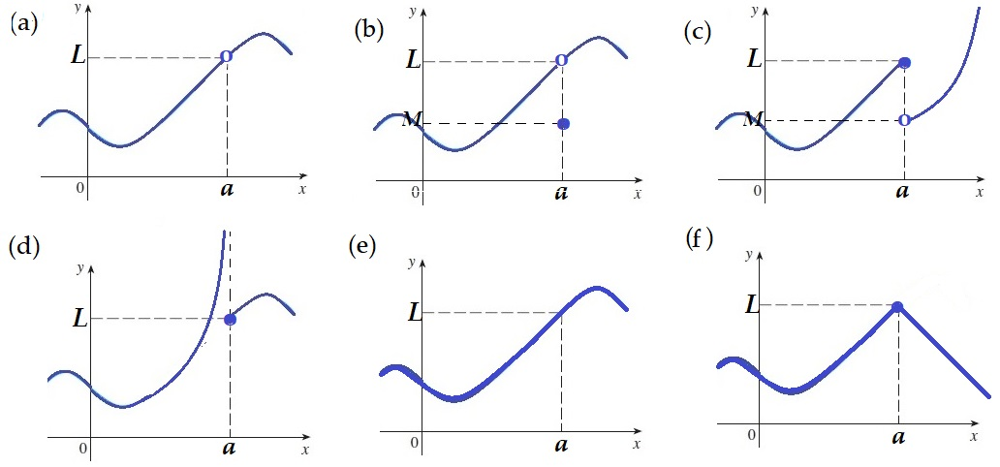

Matemáticas
Auditoría e Ingeniería en Control de Gestión
Contador Público y Auditor

Noción de Continuidad
El término continuo tiene el mismo sentido en matemática que en el lenguaje cotidano. Es decir que una función es continua en \(x=a\) significa que su gráfica no sufre interrupción en \(a\), es decir no se rompe, ni da saltos al pasar por \(a\).
Dada las gráficas de las siguientes funciones, determinar con este concepto, cuales son continuas en \(x=a\).

Continuidad
Una función \(f\) es continua en un número \(x=a\) si \[\lim_{x \rightarrow a} \, f(x) = f(a)\]
Note que la definición requiere implícitamente tres cosas. Si \(f\) es continua en \(a\), entonces:
\(f(a)\) está definida (esto es, \(a\) está en el dominio de \(f\))
\(\displaystyle \lim_{x \rightarrow a} \, f(x)\) existe
\(\displaystyle \lim_{x \rightarrow a} \, f(x) = f(a)\).
Continuidad
Para cada una de las siguientes funciones, determinar si la función es continua en el punto señalado
\(\displaystyle f(x) = \dfrac{x^2 +2x-8}{x-2}\) en \(x=2\)
\(\displaystyle f(x) = \begin{cases} \dfrac{1}{x^2} & \text{si }x\neq 0 \\ 1 & \text{si } x = 0 \end{cases}\) en \(x=0\)
\(\displaystyle \displaystyle f(x) = \begin{cases} \dfrac{x^2-x-2}{x-2} & \text{si } x\neq 2 \\ 1 & \text{si }x = 2 \end{cases}\) en \(x=2\)
\(\displaystyle \displaystyle f(x) = \begin{cases} \dfrac{x^2-x-2}{x-2} & \text{si } x\neq 2 \\ 3 & \text{si } x = 2 \end{cases}\) en \(x=2\)
Tipos de discontinuidad
Cuando \(y=f(x)\) no es continua en \(x=a\), se dice que es discontinua en \(x=a\).
En general se dice que \(y=f(x)\) es continua en un conjunto \(A\), cuando es continua en cada punto de \(A\).
En los ejemplos anteriores, podemos decir que las funciones de los ejemplos 1, 2 y 3 son discontinuas en el punto indicado.
Si \(f(x)\) es discontinua en \(x=a\), existen dos casos de discontinuidad.
Si \(\displaystyle \lim_{x \rightarrow a} \, f(x)\) existe, pero es distinto a \(f(a)\). Se llama discontinuidad reparable
Si \(\displaystyle \lim_{x \rightarrow a} \, f(x)\) no existe. Se llama discontinuidad irreparable.
Ejemplo
Determinar dónde son continuas las siguientes funciones. En los puntos donde \(f\) sea discontinua, determinar si es reparable o irreparable.
\(f(x) = 4x^3 - 2x^2 +5x-6\)
\(\displaystyle f(x) = \frac{x^2- 3x -4}{x-1}\)
\(\displaystyle f(x) = \begin{cases} \dfrac{2x^2-5x-3}{x-3} & \text{si } x\neq 3 \\ 6 & \text{si } x = 3 \end{cases}\)
Propiedades de las Funciones Continuas
Cualquier función polinomial es continua en todo su dominio; es decir, es continua en \(\mathbb{R}\)
Cualquier función racional es continua siempre que esté definida; esto es, es continua en su dominio.
Las funciones raíces son continuas en su dominio.
Las funciones exponenciales, es continua en \(\mathbb{R}\)
La función logaritmo, es continua en su dominio \((0,\infty)\)
Si \(f\) y \(g\) son funciones continuas en un conjunto \(A\) entonces
\(f+g,~ f-g\) y \(f\cdot g\) son continuas en todo \(A\)
\(\dfrac{f}{g}\) es continua en el subconjunto de \(A\) donde \(g(a) \neq 0\)
Si \(g\) es continua en \(x=a\) y \(f\) es continua en \(g(a)\), entonces \(f\circ g\) es continua en \(x=a\).
Ejemplos
Estudiar la continuidad de las siguientes funciones. Cuando exista un punto de discontinuidad, clasificarlo (reparable o irreparable)
\(\displaystyle f(x) = \frac{x^2 -1}{x^2+1}\)
\(\displaystyle f(x) = \frac{x^2 +1}{x^2-1}\)
\(\displaystyle f(x) = \begin{cases} e^x & \text{si } x<0 \\ x^2 & \text{si } x\geq 0 \end{cases}\)
Ejemplos
Determinar los valores de \(a\) y \(b\) de modo que las siguientes funciones sean continuas en los reales.
\(\displaystyle f(x) = \begin{cases} \dfrac{2x^2-5x-3}{x-3} & \text{si } x\neq 3 \\ a & \text{si } x = 3 \end{cases}\)
\(\displaystyle f(x) = \begin{cases} 1+x^2 & \text{si } x \leq 0 \\ ax+b & \text{si } 0<x\leq 2 \\ (x-2)^2 & \text{si } x>2 \end{cases}\)